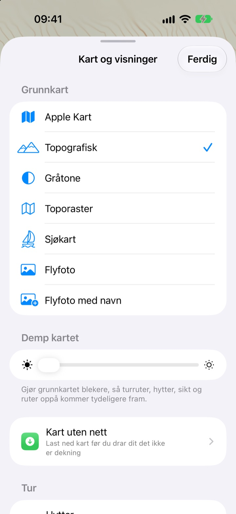
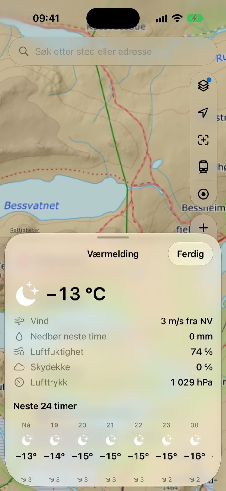
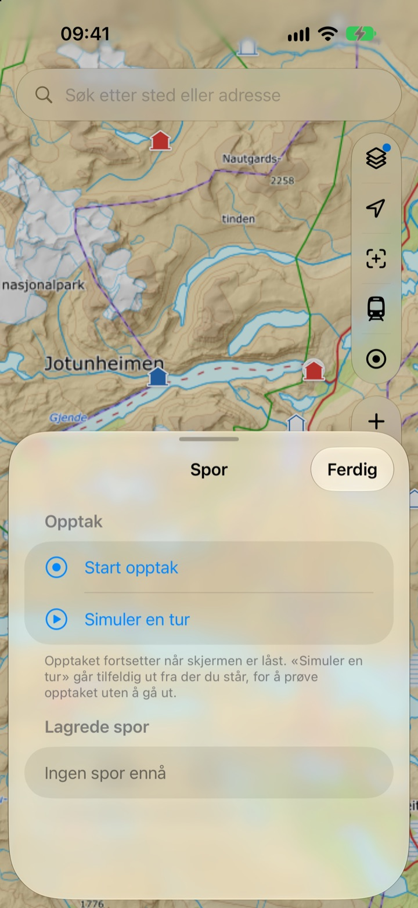

Om denne veiledningen. Navn på knapper og menyer står slik, akkurat som i appen. Skjermbildene er tatt i Jotunheimen og i Oslo.
Har telefonen engelsk som språk, vises Varde på engelsk. Da finner du den engelske veiledningen på nettsiden.
1
Kom i gang
Grunnleggende
Varde åpner rett i kartet. Første gang spør appen om lov til å bruke posisjonen din. Velg å tillate det, så kan kartet vise hvor du er, følge deg og veilede deg.
Skjermbildet
Søkefeltet øverst: søk etter steder, adresser og koordinater.
Knapperaden til høyre: kartvalg, følgemodus, trådkors, nærmeste holdeplass og Mine turer, og under dem zoom inn og ut.
Panelet nederst, like bredt som søkefeltet: fart, høyde over havet, nøyaktigheten på posisjonen og koordinatene der du står. Det vises når kartet følger deg (blå pil) eller trådkorset er på. Knappen Vis info for posisjonen din åpner et infokort for stedet du står.
Du flytter kartet med én finger, zoomer ved å klype og roterer med to fingre.
Kart og visningerVelg grunnkart, slå på hytter, turruter, lagrede steder, ruter, spor og holdeplasser, last ned kart og velg hva infokortet viser. En blå prikk betyr at holdeplasser vises.
FølgemodusTrykk for å sentrere kartet på deg og følge posisjonen, trykk igjen for å slutte. Hold inne for å zoome helt inn på der du står.
Kurs oppVises mens kartet følger deg. Snur kartet etter retningen du går eller kjører, i stedet for nord opp.
TrådkorsViser et trådkors midt i kartet med koordinater og høyde for punktet under. Flytt kartet for å flytte trådkorset.
Nærmeste holdeplassFinner holdeplassen det er kortest å gå til, med gangvei og avganger.
Mine turerTa opp spor, og se sporene, rutene og stedene dine. En rød prikk viser at et spor tas opp.
2
Kartene
Kart og visninger
Trykk på Kart og visninger øverst i knapperaden for å velge kart og hva som vises oppå. Trykk Ferdig når du er ferdig.
Grunnkart
Kart
Passer til
Apple Kart
Byer, veier og steder i hele verden
Topografisk
Tur i Norge: høydekurver, stier, myr, skog og terrengskygge
Gråtone
Topografisk kart i grått, så det du legger oppå, synes godt
Toporaster
Kartverkets klassiske papirkartstil
Sjøkart
Båt og kyst: dybder, skjær og merker
Flyfoto
Se terrenget, skogen og bebyggelsen som det er
Flyfoto med navn
Flyfoto med stedsnavn og veier
Kartverkets kart dekker Norge. Utenfor Norge vises Apples kart og flyfoto.
Demp kartet
Med glidebryteren Demp kartet blir grunnkartet blekere, så turruter, hytter, sikt og ruter kommer tydeligere fram.
TipsVelg flyfoto og demp kartet litt når du planlegger en tur utenfor sti. Da ser du både terrenget og turrutene tydelig.

Kart og visninger
Hytter
Slå på Hytter under Tur. DNT-hytter vises i rødt og andre hytter i blått, med de samme symbolene som på ut.no. Hyttene vises når du zoomer inn.
Trykk på en hytte for å se om den er betjent, selvbetjent eller ubetjent, hvor mange senger den har, om den er låst med DNT-nøkkel, og en lenke til Mer på ut.no eller hyttas nettside.
Turruter
Slå på Turruter for merkede fotruter og sykkelruter fra Turrutebasen. Trykk på en rute for å se navnet, typen, merkingen, graderingen (enkel, middels, krevende eller ekspert) og hvem som holder den ved like.
Lagrede steder, ruter og spor
Slå på Lagrede steder, Ruter og Spor for å se alle stedene, rutene og sporene dine i kartet. Det du velger i søket eller i Mine turer, vises uansett.
Holdeplasser
Slå på Holdeplasser under Kollektivtrafikk for å se holdeplasser for buss, tog, trikk og båt når du zoomer inn. Se kapittel 8.
Flyfoto med navn og turruter
3
Søk og koordinater
Finn fram
Trykk i søkefeltet Søk etter sted eller adresse øverst og skriv det du leter etter. Treffene vises under feltet, med type og kommune, for eksempel «Gjendebu – Turisthytte · Lom».
Skriv et stedsnavn, en adresse, en hytte, en topp eller et vann.
Trykk på treffet. Kartet flytter seg dit, og et infokort viser opplysningene om stedet.
Trykk Tøm søk (krysset) for å søke på nytt, eller Avbryt for å lukke søket.
Søk på koordinater
Du kan også skrive inn koordinater, for eksempel fra en turbeskrivelse eller en geocache. Varde forstår desimalgrader, grader og minutter, grader, minutter og sekunder, og UTM.
Format
Eksempel
Desimalgrader
N 61.49450° E 008.81250°
Grader og minutter
N 61° 29.670' E 008° 48.750'
Grader, minutter og sekunder
N 61° 29' 40.2" E 008° 48' 45.0"
UTM
32V 490017 6817883 (øst før nord)
Vise og kopiere koordinater
Bytt format: trykk på koordinatene i infokortet eller panelet for å bytte til neste format.
Kopier: trykk på kopiknappen ved siden av, eller hold fingeren på koordinatene. En hake viser at de er kopiert.
Trådkors
Trykk Trådkors i knapperaden. Et trådkors vises midt i kartet, og panelet nederst viser høyden, avstanden fra deg og koordinatene for punktet under mens du flytter kartet. Kartet slutter å følge deg, så det står stille mens du sikter. Trykk på knappen igjen for å fjerne trådkorset.
TipsTrådkorset er nyttig når du skal lese av koordinatene til et sted du ser i kartet, for eksempel for å gi dem til en annen eller melde inn et funn.
Lagrede steder
Lagre: trykk Lagre (stjernen) i infokortet for et punkt, en hytte, en holdeplass eller et søketreff. Gi stedet et navn, et notat og eventuelt en mappe.
Finn igjen: lagrede steder vises med en gul stjerne i kartet. Skriv navnet i søkefeltet, så kommer stedet først i treffene, også uten nett. Alle stedene, mappe for mappe, ligger under Steder i Mine turer.
Endre eller slette: trykk Lagret i kortet for stedet, eller sveip mot venstre på stedet i Mine turer og velg Rediger eller Slett.
4
Informasjon om et punkt
Hold fingeren på kartet
Hold fingeren på et sted i kartet. Et infokort viser Valgt punkt med koordinatene og opplysningene for akkurat det punktet.
Rad
Hva den viser
Høyde over havet
Terrenghøyde fra Kartverkets laserdata. I tunneler og på bruer vises terrenget, ikke veien.
Vær nå
Temperatur, vind og nedbør neste time fra Meteorologisk institutt
Snø
Snødybde, nysnø siste døgn og skiføre fra seNorge/NVE
Snøskredvarsel
Dagens faregrad for området fra Varsom/NVE
Tidevann
Neste flo og fjære ved nærmeste målestasjon
Velg hvilke rader du vil se under Når du holder fingeren på kartet i Kart og visninger.
Infokort for en topp ved Gjende
Værmelding
Trykk på raden Vær nå for å åpne en detaljert Værmelding med været nå, vind, luftfuktighet, lufttrykk og skydekke, en oversikt over Neste 24 timer og Kommende dager.
Snø og skiføre
Snødybde og skiføre er beregnet daglig med NVEs snømodell i ruter på 1 × 1 km. Lokale forskjeller som skavler og bart på rabber kommer ikke med. Skiføret beskrives som bart, lite snø, fuktig snø eller tørr snø.
Knappene i kortet
Veibeskrivelse hit: planlegg en reise til punktet. Se kapittel 6.
Sikt: se hva som er synlig fra punktet. Se kapittel 5.
Lukk (krysset): lukker kortet.
Bruk eget skjønnVarsler og høyder er veiledende. Sjekk alltid varsom.no og yr.no før turer i skredterreng, og vurder forholdene der du er.

Værmelding
5
Siktanalyse
Hva kan du se herfra?
Siktanalysen viser hvilke deler av terrenget du kan se fra et punkt. Det synlige området farges magenta i kartet.
Hold fingeren på punktet du vil se fra, eller søk det opp.
Trykk Sikt i infokortet.
Vent til Beregner synlig område … er ferdig. Linjen Sikt fra punktet nederst forteller hva som er regnet med.
Zoom ut for å se lenger. Sikten regnes ut på nytt for det nye utsnittet.
Trykk Skjul sikt eller krysset for å slå den av.
Slik regnes sikten ut
Varde henter terrengmodellen fra Kartverket og legger til en antatt trehøyde der topokartet viser skog. For hvert sted i kartet sjekkes det om terreng eller skog stenger på veien dit. Jordkrumningen og lysbrytningen i lufta regnes med.
Står du i åpent lende tett ved en skogkant, stenger skogen sikten den veien, uansett hvor langt du har zoomet ut.
Sikt fra en topp ved Gjende
Når du står i skog
Ligger punktet i skog, vises to menyer under linjen Sikt fra punktet:
Meny
Valg
Tårn / På bakken
Hvor høyt over bakken du står, for eksempel i et utkikkstårn: 0–50 meter. Øyehøyden kommer i tillegg.
Skog
Antatt høyde på skogen: 5–30 meter (standard 15 m), eller Se bort fra all skog for å regne med bare terrenget.
Ingen skog der jeg står
Bryter i Skog-menyen. Bruk den når kartet viser skog der det i virkeligheten er hogd eller ryddet. Da regnes skogen rundt deg som åpent lende.
Punktet ligger i skogStår du under tretoppene, stenger trærne rundt for det meste av sikten. Da sier Varde fra og foreslår å velge et utkikkstårn, så du ser over trærne.
BegrensningerSkogen leses av fargen i topokartet, og høyden er en antakelse. Hogstfelt, enkelttrær, bygninger og små åpninger kommer ikke med. Bruk analysen som et godt inntrykk, ikke som en fasit.
6
Reiseplanlegging og veiledning
Kom deg dit
Trykk Veibeskrivelse hit i infokortet for et sted eller et punkt. Kortet Til … viser alternativene.
Reisemåte
Velg Kollektiv, Bil, Gå eller Sykkel. Hvert alternativ viser reisetid, avstand og eventuelle bytter. Trykk på et alternativ for å se alle stegene.
Kollektiv bruker Entur, med sanntid og bytter. Går ingen kollektivreise helt fram, vises reisen til nærmeste stopp, og så går du resten.
Gå og Sykkel følger stier og veier.
Bil kan ta med ferjer. Ventetid og avgangstider på ferjene er ikke regnet med.
Hvor reisen starter
Som standard starter reisen Fra din posisjon. Trykk på den for å Velg hvor reisen starter, og søk opp et annet sted.
Høydeprofil
Trykk Høydeprofil for å se hvor mye ruten går opp og ned, og det høyeste og laveste punktet.
Veibeskrivelse til Gjendebu
Veiledning underveis
Velg et alternativ, og trykk Start. Veiledningen kan bare starte når reisen går fra der du står.
Kartet følger deg med kurs opp, og neste instruksjon vises øverst med avstanden dit. Skjermen holder seg på så lenge veiledningen pågår. Ellers låses den som vanlig, for å spare strøm.
Varde leser instruksjonene høyt. Trykk på høyttalerknappen for å slå Opplesning av eller på.
Kommer du utenfor ruten, beregner Varde en ny rute. Uten nett får du beskjed om å gå tilbake til ruten.
Trykk Avslutt veiledning når du er framme, eller vil stoppe.
CarPlayKobler du telefonen til en bil med CarPlay, vises kartet og veiledningen på bilens skjerm.
7
Ruter innom flere steder
Planlegg en rute
En rute kan gå innom så mange steder du vil, og hver etappe kan ha sin egen reisemåte. Kjør til parkeringen, gå til toppen og ta bussen hjem.
Lag en rute
Trykk Mine turer, velg Ruter og trykk Planlegg ny rute.
Velg hvor Ruten starter fra: Din posisjon, et lagret sted eller et sted du søker opp. Vil du heller velge i kartet, trykker du Velg i kartet.
Legg til neste sted. Hold fingeren på kartet, trykk på en hytte, en holdeplass eller et lagret sted, eller søk i søkefeltet. Trykk så Legg til i ruten i kortet. For det første stedet heter knappen Start ruten her. Du kan også trykke + i rutekortet.
Fortsett til ruten går innom alt du vil. Ruten vises i kartet med nummererte stopp.
Endre ruten
Rekkefølge: dra et stopp opp eller ned. Du kan også holde fingeren på stoppet og velge Flytt opp eller Flytt ned.
Fjern: sveip mot venstre på stoppet og trykk Fjern.
Reisemåte: knappen ved hvert stopp velger hvordan du reiser dit: Kollektiv, Bil, Gå eller Sykkel. Reisemåten følger stedet når du endrer rekkefølgen.
Etappene: trykk på et stopp for å se reisen dit steg for steg, med høydeprofil.
Varde beregner etappene etter hverandre, så en kollektivreise går etter at du er framme med etappen før. Rutekortet viser samlet reisetid, lengde og når du er framme.
Raskere rekkefølgeFinnes det en rekkefølge der du er framme minst ett minutt tidligere, foreslår Varde den. Trykk Bruk for å bytte. Første stopp står fast, og ender ruten der den startet, står også det siste fast.
Lagre og følg ruten
Lagre rute gir ruten navn, notat og mappe, og legger den under Ruter i Mine turer. Høydeprofil viser hele ruten.
Start veileder deg stopp for stopp. Står du ikke ved første stopp, går veiledningen dit først. Øverst ser du hvilket stopp du er på vei til og hva som kommer etterpå. Når du er framme, fortsetter veiledningen til neste stopp, beregnet fra der du er. Hopp over går rett videre til neste stopp.
En lagret rute åpner du igjen med navigasjonspilen ved ruten i Mine turer, Åpne i ruteplanleggeren. Trykk så Start.
Godt å viteNår veiledningen avsluttes, forsvinner ruten fra kartet. Lagre den først hvis du vil bruke den igjen.
8
Kollektivtrafikk
Entur
Varde viser holdeplasser for buss, tog, T-bane, trikk, båt og fly, med sanntidsavganger fra Entur.
Nærmeste holdeplass
Trykk Nærmeste holdeplass (trikkesymbolet) i knapperaden. Varde finner holdeplassen det er kortest å gå til fra der du står, eller fra stedet du har søkt opp, og viser gangveien og de neste avgangene.
Avganger
Avganger med sanntid er merket, og forsinkelser og innstilte avganger vises.
Trykk på en avgang for å se alle stoppene på veien, og trykk Alle … stopp til … for hele listen.
«Buss for tog» er merket for seg.
Holdeplasser i kartet
Slå på Holdeplasser i Kart og visninger. Holdeplassene vises når du zoomer inn. Trykk på en holdeplass for å se avgangene derfra.
TipsPlanlegger du en tur med kollektiv, se kapittel 6. Er du på vei, viser veiledningen hvor du skal gå av og hvor du skal bytte.
Avganger fra Oslo S
9
Mine turer
Spor, ruter og steder
Trykk Mine turer (turgåeren nederst i knapperaden). Her ligger Spor du har tatt opp, Ruter du skal gå og Steder du har lagret.
Ta opp en tur
Trykk Ta opp spor. En rød prikk på knappen viser at sporet tas opp.
Lås gjerne telefonen og legg den i lomma. Sporet tas opp også når skjermen er låst.
Mens sporet tas opp, ser du avstand og tid nederst i kartet. Trykk Stopp og lagre når du er ferdig, og gi sporet et navn, et notat og eventuelt en mappe. Navnet er fylt ut med dato og klokkeslett.
Lagrede spor
Sporene og rutene ligger mappe for mappe, som stedene. Mappene er felles for steder, spor og ruter. Trykk på et spor for å vise det i kartet, og Skjul i kartet for å fjerne det. Hold fingeren på et spor og velg Lagre som rute for å gå turen igjen.
Trykk på delingsknappen, Del som GPX, for å sende sporet som en GPX-fil på e-post, til Filer eller til en annen app.
Sveip mot venstre for å redigere eller slette et spor eller en rute. Ruter du har laget i Varde, åpner du igjen med navigasjonspilen. Se kapittel 7.
Ruter fra andre apper
Åpne en GPX-fil i Varde fra Filer, e-post eller AirDrop, eller trykk Importer GPX-fil (dokumentet med pluss). Sporet i filen legges blant Ruter, og veipunktene blir lagrede steder i en egen mappe. Sletter du ruten, slettes stedene som fulgte med.
PersonvernSpor du tar opp, lagres bare på telefonen. De sendes ikke noe sted før du selv deler dem.

Mine turer
10
Kart uten nett
Før du drar
På fjellet er det ofte dårlig dekning. Last ned kartene for området du skal til mens du har nett, så vises de også uten.
Flytt og zoom kartet så det viser området du vil laste ned.
Åpne Kart og visninger og trykk Kart uten nett.
Trykk Last ned området som vises.
Velg Kartlag, for eksempel Topografisk, og Detaljnivå. Slå på Ta med turruter om du vil ha rutene med.
Sjekk område, antall kartfliser og lagringsplass, og trykk Last ned.
Detaljnivå
Nivå
Passer til
Oversikt
Store områder, for å se hvor du er
Middels
Lange turer over flere dager
Detaljert
Vanlige turer, med stier og høydekurver
Svært detaljert
Mindre områder med mange detaljer
Alle detaljer
Små områder, for de fineste detaljene
Jo mer detaljer, desto mer plass tar kartet. Er området for stort for detaljnivået, får du beskjed om å zoome inn eller velge et lavere nivå.
Godt å vite
Nedlastingen fortsetter når du lukker innstillingene, men stopper hvis appen ligger lenge i bakgrunnen. Den kan da fortsettes.
Områder du har sett i kartet, lagres også, men bare så langt inn som du har zoomet.
Under Nedlastede områder ser du hva du har lastet ned og hvor mye plass det tar. Sveip mot venstre for å slette et område.
Uten nett virker ikke søk, vær, snø, skredvarsel, siktanalyse eller ny reiseplanlegging, men kartet, posisjonen og sporopptaket virker.
TipsLast ned kartet hjemme på wifi kvelden før turen. Prøv gjerne flymodus etterpå for å se at kartet vises.
11
Personvern, kilder og sikkerhet
Om Varde
Personvern
Varde har ingen egen server, konto, sporing eller reklame. Koordinater sendes bare til tjenestene under når det trengs, for eksempel for å hente terrenghøyden der du står eller planlegge en reise. Spor du tar opp, lagres bare på enheten.
Kart og data
Kilde
Brukes til
Kartverket
Topografiske kart, sjøkart, terrenghøyde, tidevann, adresser, turruter og hytter
Apple
Kart, flyfoto, stedssøk og veibeskrivelse for bil, gange og sykkel
Under Om Varde nederst i Kart og visninger finner du versjonen, kildene med lenker og personvernet.
Sikkerhet på tur
Varde er et hjelpemiddelVarsler og høyder er veiledende. Bruk alltid eget skjønn i fjellet og på sjøen, ha med kart og kompass på lengre turer, og følg Fjellvettreglene.
Lad telefonen før turen, og ta gjerne med en batteribank. GPS og skjerm bruker strøm.
Last ned kart for området før du drar (kapittel 10).
Sjekk snøskredvarselet på varsom.no og værmeldingen før du går ut i skredterreng.
Si fra hvor du går, og når du regner med å være tilbake.